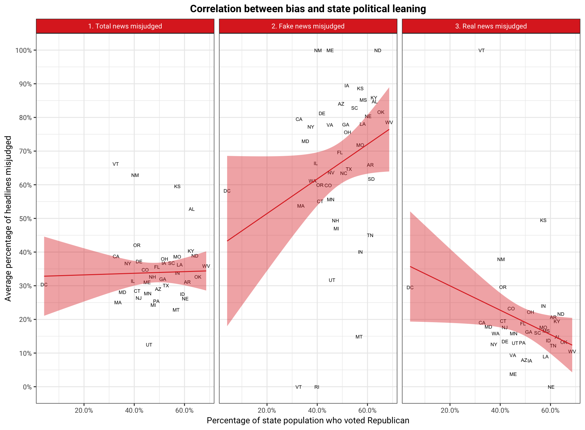

After the 2016 Presidential Election, the term “fake news” spread across America like wildfire. Craig Silverman, Buzzfeed’s media editor, was the first to notice the steady flow of news with zero ounce of truth coming from Eastern Europe, all centred around the election.1 Disturbingly, fake news might have influenced the outcome of the election. This is why we set out to determine: Who are the most vulnerable to fake news?
We drew upon raw data from a 2016 survey jointly conducted by Buzzfeed and Ipsos on 3,015 adult in the US.2 Respondents were randomly asked whether they recall some headlines containing a mix of fake and real news. If they do, they were then asked to categorize the news as real or fake.
We calculated the percentage of headlines that an average person from each state misjudged (i.e. either fake news believed as true or real news believed as false). This percentage varies greatly by state and does not really follow a geographical or political pattern. However, when data is split into fake news and real news, it appears that the more strongly republican a state is (as indicated by the percentage of its population who voted red in the 2016 presidential election), the more likely people there believe in fake news. On the contrary, the more strongly democratic a state is, the more skeptical people tend to be even when it comes to real news!
If you’re interested in the numbers beyond state average, click here to read more about how perception of fake news differs by age group, political affiliation, and candidate choice!
ggplot(wrangled_data_4,
aes(x = percentage_rep, y = state_average,
text = paste('State: ', HCAL_REGION1_Label_US,
'\nPercentage of headlines misjudged: ',
state_average*100,
'%\nPercentage voted Republican 2016: ',
percentage_rep*100,'%'),group = 1)) +
geom_text(label = wrangled_data_4$abbr, size = 2, check_overlap = T) +
geom_smooth(method = "lm", color = "#7fcdbb", size = 0.5, fill = "#7fcdbb") +
scale_y_continuous(labels = percent, breaks=seq(0, 1, .1)) +
scale_x_continuous(labels = percent, breaks=seq(0, 1, .1)) +
labs(title = 'Correlation between bias and state political leaning',
x = 'Percentage of state population who voted Republican',
y = 'Average percentage of headlines misjudged') +
facet_wrap(~fake_or_real) +
scale_fill_brewer(palette = "YlGnBu") +
theme_bw() +
theme(
text = element_text(size = 10, family = "Roboto", color = "#666666"),
plot.title = element_text(hjust = 0.5, size = 12, face = "bold"))
Wendling, Mike. “The (almost) complete history of ‘fake news’” BBC, 22 Jan. 2018, https://www.bbc.com/news/blogs-trending-42724320. Accessed 17 Dec. 2018.↩
Singer-Vine, Jeremy. “2016-12-fake-news-survey” BuzzFeedNews Github, 6 Dec. 2016, https://github.com/BuzzFeedNews/2016-12-fake-news-survey. Accessed 17 Dec. 2018.↩